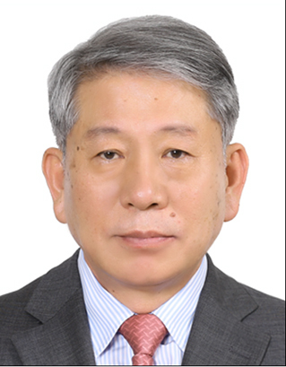

Jongdal LEE
Cell: +82-010-2663-2416
Web: jdlee@ynu.ac.kr
Email: jdlee@ynu.ac.kr
I have been engaged in education and research activities in the field of civil engineering (road and transportation) for a long time and am currently serving as an emeritus professor at Yeungnam University. I have also served as the Director of the Facilities Management Office at Yeungnam University, as well as a board member and chapter president of academic societies such as the Korean Society of Civil Engineers and the Korean Society of Transportation. My areas of interest include traffic flow simulation, GIS, and GNSS.
- Education
-
Yeungnam University, Ph. D.
Major: Civil Engineering
- Experience
-
Educational Activities
Mar.1989 ~ Feb.2022
- Assistant Professor ~ Professor, Yeungnam University, Dept. of Civil Engineering
Research Activities
- Board member and chapter president of KSCE and Korean Society of Transportation
Feb.2001~Feb.2002
- Visiting Scholar, Univ. of California at Berkeley, ITS Center
Aug.2008~Feb.2009
- Visiting Scholar, Univ. of Florida, Transportation Research Center
Attended Committees Mar.1989 ~ Feb.2022
- Transportation Impact Assessment Committee, Daegu Metropolitan City and Gyeongbuk Province
- Architectural Design Committee, Daegu Metropolitan City and Gyeongbuk Province
- Service Review and Assessment Committee, Public Procurement Service, in ITS & GIS Sector
- Publishing
-
Books
Office and records management, database administration, event organization, customer support, travel
coordination
Journal Articles
Microsoft productivity software (Word, Excel, etc), Adobe Creative Suite, Windows
- Recent Research Topics with Ph.D Students
- World domination, Social Manipulation, Murder Most Foul
- Research Lab. Alumnus
- Available on request